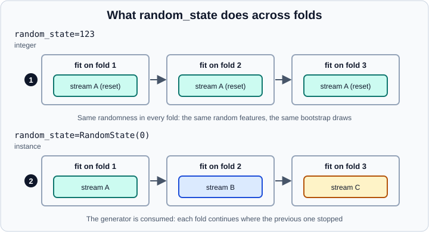

Common Pitfalls: Leakage and Randomness
|
This content was generated with the assistance of AI and should be verified against the official documentation before being relied on in production. |
This page was checked in October 2026 against scikit-learn 1.9 (1.9.1, released September 2026) on Python 3.13 with NumPy 2.5 and pandas 3.1, and every example was run on those versions, so the printed outputs are real. It follows the structure of the official chapter "Common pitfalls and recommended practices" and extends it with leakage sources that the chapter only hints at: groups, time and target encoding.
The mistakes below share one trait: the code runs, the score looks plausible, and the number is wrong. Leakage makes scores too good, inconsistent preprocessing makes them too bad, and careless randomness makes them impossible to reproduce or to compare. The general ideas behind them are in Model Evaluation and Feature Engineering; this page shows the scikit-learn specifics.
Inconsistent preprocessing
Every transformation applied while training a model must also be applied, with the same learned parameters, to every later dataset: the test set, new batches and production data. Otherwise the model receives a feature space it was not trained on.
The wrong version scales the training data but forgets the test data.
from sklearn.datasets import make_regression
from sklearn.linear_model import LinearRegression
from sklearn.metrics import mean_squared_error
from sklearn.model_selection import train_test_split
from sklearn.pipeline import make_pipeline
from sklearn.preprocessing import StandardScaler
random_state = 42
X, y = make_regression(random_state=random_state, n_features=1, noise=1)
X_train, X_test, y_train, y_test = train_test_split(
X, y, test_size=0.4, random_state=random_state)
scaler = StandardScaler()
X_train_transformed = scaler.fit_transform(X_train)
model = LinearRegression().fit(X_train_transformed, y_train)
# Wrong: the model never saw unscaled data
print("wrong: ", round(mean_squared_error(y_test, model.predict(X_test)), 2))
# Right: reuse the scaler fitted on the training data
print("right: ", round(mean_squared_error(y_test, model.predict(scaler.transform(X_test))), 2))
# Best: let a Pipeline do both
pipe = make_pipeline(StandardScaler(), LinearRegression()).fit(X_train, y_train)
print("pipeline:", round(mean_squared_error(y_test, pipe.predict(X_test)), 2))Output:
wrong: 62.81 right: 0.9 pipeline: 0.9
A Pipeline removes the whole class of mistakes: fit runs fit_transform on every step in turn, while predict and score run only transform, with the parameters learned in fit. The same holds for ColumnTransformer (see Pipelines and ColumnTransformer). Persist the whole pipeline, not the bare model, so that serving code cannot skip a step; see Model Persistence and Security.
Data leakage
Leakage is the use of information that will not exist at prediction time when building the model. It inflates every estimate computed afterwards, cross-validation scores included, and the damage shows only in production. The general rule: never call fit or fit_transform on anything that includes test data.
The official chapter lists the habits that prevent it.
-
Split first, before any preprocessing.
-
Use
fitandfit_transformon the training subset only, andtransformon both subsets. -
Normalisation, imputation, feature selection, dimensionality reduction and encoding all learn from data, so the rule applies to all of them, not only to scalers.
-
Put every learned step inside a
Pipeline, which applies the rule automatically, incross_val_scoreand in the hyper-parameter searches too.
Leakage through feature selection
The official example uses an extreme case: 200 samples, 10,000 random features and random labels, so there is nothing to learn and the honest accuracy is about 0.5.
import numpy as np
from sklearn.ensemble import HistGradientBoostingClassifier
from sklearn.feature_selection import SelectKBest
from sklearn.metrics import accuracy_score
from sklearn.model_selection import cross_val_score, train_test_split
from sklearn.pipeline import make_pipeline
n_samples, n_features, n_classes = 200, 10000, 2
rng = np.random.RandomState(42)
X = rng.standard_normal((n_samples, n_features))
y = rng.choice(n_classes, n_samples)
# Wrong: the whole dataset is used to select features, then split
X_selected = SelectKBest(k=25).fit_transform(X, y)
X_train, X_test, y_train, y_test = train_test_split(X_selected, y, random_state=42)
gbc = HistGradientBoostingClassifier(random_state=1).fit(X_train, y_train)
print("leaky holdout accuracy:", accuracy_score(y_test, gbc.predict(X_test)))
# Right: split first, select inside a Pipeline
X_train, X_test, y_train, y_test = train_test_split(X, y, random_state=42)
pipeline = make_pipeline(SelectKBest(k=25), HistGradientBoostingClassifier(random_state=1))
pipeline.fit(X_train, y_train)
print("pipeline holdout accuracy:", accuracy_score(y_test, pipeline.predict(X_test)))
scores = cross_val_score(pipeline, X, y)
print(f"pipeline CV accuracy: {scores.mean():.2f}+/-{scores.std():.2f}")
# Cross-validating after selecting on all rows is leaky too
leaky = cross_val_score(HistGradientBoostingClassifier(random_state=1), X_selected, y)
print(f"leaky CV accuracy: {leaky.mean():.2f}+/-{leaky.std():.2f}")Output:
leaky holdout accuracy: 0.76 pipeline holdout accuracy: 0.5 pipeline CV accuracy: 0.43+/-0.05 leaky CV accuracy: 0.80+/-0.07
With labels that carry no information, the leaky variant "learns" 0.76 on the hold-out set and 0.80 in cross-validation, and the honest variant stays at chance. The leak does not require a model: the feature selector alone saw the labels of the test rows. The Pipeline version passes cross_val_score the whole dataset, and each fold refits the selector on its training part only.
Leakage through related rows
Random splits assume that rows are independent. When several rows come from the same patient, customer, device or document, a random split places siblings on both sides, and the model can recognise the group instead of learning the task. In the example every group has a unique signature and labels that are random across groups, so there is nothing to generalise, and honest accuracy is 0.5.
import numpy as np
from sklearn.ensemble import RandomForestClassifier
from sklearn.model_selection import GroupKFold, KFold, cross_val_score
rng = np.random.RandomState(0)
n_groups, per_group = 200, 5
groups = np.repeat(np.arange(n_groups), per_group)
fingerprint = rng.normal(size=(n_groups, 5))[groups] # each group has its own signature
X = fingerprint + 0.1 * rng.normal(size=(n_groups * per_group, 5))
y = rng.choice(2, n_groups)[groups] # labels are random across groups
rf = RandomForestClassifier(n_estimators=50, random_state=0)
shuffled = KFold(5, shuffle=True, random_state=0)
print("KFold, groups split: ", cross_val_score(rf, X, y, cv=shuffled).mean().round(2))
print("GroupKFold, groups kept: ", cross_val_score(rf, X, y, groups=groups, cv=GroupKFold(5)).mean().round(2))Output:
KFold, groups split: 0.95 GroupKFold, groups kept: 0.54
GroupKFold, StratifiedGroupKFold and LeaveOneGroupOut keep each group in one fold; the group labels travel in the groups argument of the scoring function or search. See Cross-Validation and Splitters.
Leakage through time
For temporal data a shuffled split lets the model train on the future and predict the past. Use TimeSeriesSplit, whose training window always precedes the test window. Its gap parameter drops the samples just before the test window, which matters when the target or the features look back in time.
import numpy as np
from sklearn.model_selection import TimeSeriesSplit
t = np.arange(20)
for fold, (train, test) in enumerate(TimeSeriesSplit(n_splits=3, test_size=3, gap=2).split(t)):
print(f"fold {fold}: train {train.min()}..{train.max()}, test {test.tolist()}")Output:
fold 0: train 0..8, test [11, 12, 13] fold 1: train 0..11, test [14, 15, 16] fold 2: train 0..14, test [17, 18, 19]
Two rows (9 and 10, then 12 and 13, then 15 and 16) are skipped between the end of each training window and the start of its test window. Rolling averages, lag features and the target itself must also be computed using only the past, which no splitter can verify for you.
Leakage through target encoding
TargetEncoder replaces a category with a statistic of the target, so naively encoding the training rows with their own targets leaks the label. The class avoids this with cross fitting inside fit_transform: each row is encoded with statistics computed from the other folds. fit(X, y).transform(X) does not do that, because transform uses the statistics of the full training set. Fit the encoder on the training data only, call fit_transform on it, and use transform on new data.
import numpy as np
from sklearn.model_selection import KFold
from sklearn.preprocessing import TargetEncoder
rng = np.random.RandomState(0)
X = rng.choice(list("abcdefghij"), size=(300, 1))
y = rng.normal(size=300) # pure noise: no category carries any signal
enc = TargetEncoder(cv=KFold(5, shuffle=True, random_state=0))
cross_fitted = enc.fit_transform(X, y) # each row encoded without its own target
in_sample = enc.transform(X) # every row encoded with the full-data means
print("same values:", np.allclose(cross_fitted, in_sample))
print("correlation with y, fit_transform:", round(np.corrcoef(cross_fitted[:, 0], y)[0, 1], 3))
print("correlation with y, transform: ", round(np.corrcoef(in_sample[:, 0], y)[0, 1], 3))Output:
same values: False correlation with y, fit_transform: -0.045 correlation with y, transform: 0.17
The cross-fitted feature has a correlation near zero with the noise target, which is correct, while the in-sample version appears informative and would invite the downstream model to overfit. In scikit-learn 1.9 the encoder’s shuffle and random_state parameters are deprecated (removal in 1.11); pass a splitter such as KFold(5, shuffle=True, random_state=0) as cv to control the folds, as above. See Encoding Categorical Features.
Other sources of leakage
-
Tuning on the test set. Choosing hyper-parameters, thresholds or features by looking at test scores turns the test set into training data. Tune with cross-validation inside the training data, or with nested cross-validation, and touch the test set once. See Hyper-Parameter Search.
-
Duplicates. Exact or near duplicates across the split behave like related rows; remove them before splitting.
-
Target leakage in features. A column that is created after the outcome (a refund flag when predicting churn, a diagnosis code when predicting a diagnosis) gives a perfect score and a useless model. Ask for every feature whether it is known at prediction time.
-
Imputing, scaling or encoding before the split. These are the same mistake as feature selection above, only less dramatic.
-
Reusing a calibration or threshold set. A model calibrated or thresholded on the data it was trained on is optimistic. See FrozenEstimator for the pattern that keeps the sets disjoint.
Controlling randomness
Many scikit-learn objects are random: estimators such as RandomForestClassifier and SGDClassifier, and splitters such as KFold(shuffle=True). They are controlled by their random_state parameter, described in the glossary. The parameter accepts three kinds of values, and the choice matters more than it looks.
| Value | Effect |
|---|---|
An integer |
Every call to |
A |
The generator is consumed by each call. Repeated calls give different results, and the sequence of calls explores all sources of entropy. The instance is shared by every object that was given it. |
|
Equivalent to passing numpy’s global |

Marker 1 in the figure shows an integer seed, where all folds see the same randomness. Marker 2 shows an instance, where each fold draws different randomness.
Estimators: integer or instance
import numpy as np
from sklearn.linear_model import SGDClassifier
from sklearn.datasets import make_classification
X, y = make_classification(n_features=5, random_state=0)
# an instance is consumed by every call to fit
rng = np.random.RandomState(0)
sgd = SGDClassifier(random_state=rng)
print(sgd.fit(X, y).coef_.round(2))
print(sgd.fit(X, y).coef_.round(2))
# an integer restarts from the same state on every call
sgd = SGDClassifier(random_state=0)
print(np.array_equal(sgd.fit(X, y).coef_, sgd.fit(X, y).coef_))Output:
[[22.83 11.61 -2.68 21.38 -2.28]] [[7.55 9.2 3.88 3.86 5.22]] True
Fitting the same estimator twice with an instance yields two different models. With an integer the second fit repeats the first one exactly.
Cross-validation robustness
The two choices give different cross-validation procedures, not just different numbers.
import numpy as np
from sklearn.datasets import make_classification
from sklearn.ensemble import RandomForestClassifier
from sklearn.model_selection import cross_val_score
X, y = make_classification(random_state=0)
# integer: every fit restarts from the same state, so every fold uses the same random features
rf_int = RandomForestClassifier(random_state=123)
print(cross_val_score(rf_int, X, y))
# instance: the generator is consumed, so every fold gets different randomness
rf_inst = RandomForestClassifier(random_state=np.random.RandomState(0))
print(cross_val_score(rf_inst, X, y))Output:
[0.85 0.95 0.95 0.9 0.9 ] [0.9 0.95 0.95 0.9 0.9 ]
The scores differ for more than the seed value. With an integer, the forest in all five folds picks its random features and bootstrap samples from the same stream. With an instance, each fold uses different randomness, so the average is robust to the estimator’s own variability. Treating random_state as a hyper-parameter to tune, by trying integers until the score looks good, is a form of overfitting to the seed; passing an instance (or None) discourages it. The next example shows how much a single seed can move a score.
from sklearn.datasets import make_classification
from sklearn.ensemble import RandomForestClassifier
from sklearn.model_selection import KFold, cross_val_score
X, y = make_classification(random_state=0)
cv = KFold(5, shuffle=True, random_state=0)
for seed in range(5):
s = cross_val_score(RandomForestClassifier(n_estimators=20, random_state=seed), X, y, cv=cv).mean()
print("seed", seed, round(s, 3))Output:
seed 0 0.91 seed 1 0.91 seed 2 0.9 seed 3 0.89 seed 4 0.87
The spread from 0.87 to 0.91 comes only from the estimator’s seed on the same data and the same folds. Report the average over several runs when the difference between two models is smaller than this.
Splitters: pass an integer
A splitter given an instance returns different folds each time split is called. That is harmful when you compare estimators by calling cross_val_score repeatedly with the same splitter object, because each estimator is scored on different folds.
import numpy as np
from sklearn.datasets import make_classification
from sklearn.discriminant_analysis import LinearDiscriminantAnalysis
from sklearn.model_selection import KFold, cross_val_score
from sklearn.naive_bayes import GaussianNB
X = y = np.arange(10)
rng = np.random.RandomState(0)
cv = KFold(n_splits=2, shuffle=True, random_state=rng)
for call in (1, 2):
print("split call", call, [test.tolist() for _, test in cv.split(X, y)])
cv_int = KFold(n_splits=2, shuffle=True, random_state=0)
for call in (1, 2):
print("integer, call", call, [test.tolist() for _, test in cv_int.split(X, y)])
X, y = make_classification(random_state=0)
cv_inst = KFold(shuffle=True, random_state=np.random.RandomState(0))
cv_fixed = KFold(shuffle=True, random_state=0)
for est in (LinearDiscriminantAnalysis(), GaussianNB()):
print(type(est).__name__, "instance splitter:", cross_val_score(est, X, y, cv=cv_inst).round(2))
for est in (LinearDiscriminantAnalysis(), GaussianNB()):
print(type(est).__name__, "integer splitter: ", cross_val_score(est, X, y, cv=cv_fixed).round(2))Output:
split call 1 [[1, 2, 4, 8, 9], [0, 3, 5, 6, 7]] split call 2 [[1, 2, 3, 5, 9], [0, 4, 6, 7, 8]] integer, call 1 [[1, 2, 4, 8, 9], [0, 3, 5, 6, 7]] integer, call 2 [[1, 2, 4, 8, 9], [0, 3, 5, 6, 7]] LinearDiscriminantAnalysis instance splitter: [0.85 0.6 0.75 0.75 0.75] GaussianNB instance splitter: [0.9 0.95 0.95 0.75 0.85] LinearDiscriminantAnalysis integer splitter: [0.85 0.6 0.75 0.75 0.75] GaussianNB integer splitter: [0.8 0.75 0.9 0.9 0.85]
With an instance, the second split call produces different folds, so the per-fold scores of the two classifiers are not comparable. With an integer the folds repeat and per-fold comparison is valid. Within one call to a search object such as GridSearchCV, the splitter is called once, so fold-to-fold comparison is possible inside a single fit, but not across two calls of fit. Averages over enough folds and data still allow a fair conclusion, even with an instance.
Cloning and shared generators
clone is called everywhere inside scikit-learn: GridSearchCV, StackingClassifier, CalibratedClassifierCV and most meta-estimators clone the estimators they receive. The user guide describes clones of an estimator holding an instance as only statistical clones, and warns that two estimators sharing one instance influence each other. The sharing between separately constructed estimators is easy to see.
import numpy as np
from sklearn import clone
from sklearn.datasets import make_classification
from sklearn.linear_model import SGDClassifier
X, y = make_classification(n_features=5, random_state=0)
# two estimators sharing one instance influence each other
rng = np.random.RandomState(0)
first = SGDClassifier(random_state=rng)
second = SGDClassifier(random_state=rng)
alone = SGDClassifier(random_state=np.random.RandomState(0)).fit(X, y).coef_
c_first = first.fit(X, y).coef_.copy()
c_second = second.fit(X, y).coef_.copy()
print("shared object:", first.random_state is second.random_state)
print("first equals a fresh run:", np.array_equal(c_first, alone))
print("second equals a fresh run:", np.array_equal(c_second, alone))
# clone copies the instance: here the two clones start from the same state
a = SGDClassifier(random_state=np.random.RandomState(0))
b = clone(a)
print("clone shares the generator:", a.random_state is b.random_state)
print("clone gives the same fit:", np.array_equal(a.fit(X, y).coef_, b.fit(X, y).coef_))Output:
shared object: True first equals a fresh run: True second equals a fresh run: False clone shares the generator: False clone gives the same fit: True
The second estimator did not reproduce a fresh run because the first one had already consumed the shared generator. On scikit-learn 1.9.1 the last two lines show that clone deep-copies the instance, so the clone starts from the same state as the original rather than sharing it. That still means an estimator holding an instance is not "reset" by cloning, and the outcome of a fit depends on the generator’s state at the moment of the call. Pass integers when you need every clone to behave exactly the same way.
A decision guide
Reproducible programs
To get the same results on every execution, remove every random_state=None. The official recommendation is to create one generator at the top of the program and hand it to everything that accepts a random_state.
import numpy as np
from sklearn.datasets import make_classification
from sklearn.ensemble import RandomForestClassifier
from sklearn.model_selection import train_test_split
rng = np.random.RandomState(0)
X, y = make_classification(random_state=rng)
rf = RandomForestClassifier(random_state=rng)
X_train, X_test, y_train, y_test = train_test_split(X, y, random_state=rng)
print(rf.fit(X_train, y_train).score(X_test, y_test))Output:
0.84
The result is identical on every run, and changing the seed of rng changes it. The guide does not recommend calling np.random.seed(0): it sets a hidden global state that code you do not control may also use and consume. NumPy’s own recommendations for modern generators are in The Random Generator and Random Reproducibility and Parallel Streams; scikit-learn’s random_state still expects the legacy RandomState object, an integer or None.
Reproducibility is not correctness: a repeatable leaky experiment is still leaky. For environment pinning, data versioning and experiment tracking see Reproducibility and MLOps Basics.
Other recurring mistakes
-
Setting
random_statewithoutshuffle=Trueon a splitter.StratifiedKFold(random_state=0)raisesValueError("Setting a random_state has no effect since shuffle is False"). Older tutorials omit the shuffle argument and the call fails with scikit-learn 1.x. -
Selecting string columns by dtype with pandas 3. The default string dtype of pandas 3 is
str, notobject. On scikit-learn 1.9.1 with pandas 3.1,make_column_selector(dtype_include=object)still selects such columns, as dodtype_include=["object", "string"]anddtype_exclude="number", as the output below shows. Check your own version pair when you upgrade. -
Using accuracy on imbalanced data. A 95 percent majority class gives 0.95 accuracy to a constant predictor; choose a metric that fits the cost of errors (see Metrics and Scoring).
-
Expecting a pipeline to transform
y. Pipelines never transform the target, which is deliberate (it avoids leakage); useTransformedTargetRegressorfor a transformed regression target. -
Fitting the scaler once, outside the cross-validation loop, because "it is only scaling". It is the same leak as in feature selection, smaller.
import pandas as pd
from sklearn.compose import make_column_selector
from sklearn.model_selection import StratifiedKFold
df = pd.DataFrame({"city": ["a", "b", "c"] * 4, "n": range(12)})
print(df.dtypes.astype(str).to_dict())
print(make_column_selector(dtype_include=object)(df))
print(make_column_selector(dtype_include=["object", "string"])(df))
print(make_column_selector(dtype_exclude="number")(df))
try:
StratifiedKFold(random_state=0)
except ValueError as exc:
print("ValueError:", str(exc)[:70])Output:
{'city': 'str', 'n': 'int64'}
['city']
['city']
['city']
ValueError: Setting a random_state has no effect since shuffle is False. You shoul
Checklist
-
Split before any learned preprocessing; fit on training data only.
-
Put every learned step in a
Pipelineand cross-validate the pipeline, not the bare model. -
Match the splitter to the data: groups need
GroupKFold, time needsTimeSeriesSplit. -
Pass an integer to splitters and an instance (or an integer you can justify) to estimators; remove every
Nonewhen you need repeatability. -
Touch the test set once, for the final estimate.
-
Ask of every feature: would I know this value at prediction time?